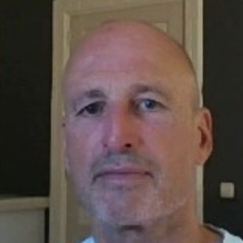

Waarde-innovatie
Niet harder concurreren, maar de spelregels veranderen. Wat is overbodig, wat moet beter, wat ontbreekt nog?
Gebaseerd op de grondbeginselen van Blue Ocean Strategy inventariseer ik wat er binnen jouw organisatie niet goed gaat en wat er beter kan. AI zet ik daarbij in als middel — niet als doel.

Drie pijlers waarop ik organisaties verder help.
Niet harder concurreren, maar de spelregels veranderen. Wat is overbodig, wat moet beter, wat ontbreekt nog?
AI lost geen problemen op als de werkwijze niet klopt. Eerst structuur, dan slimme inzet — pragmatisch en uitlegbaar.
Veranderingen zullen op een respectvolle en menselijke manier doorgevoerd worden.
Missie, visie en de kernwaarden die mijn werk sturen.
Mijn missie is om vraagstukken eenvoudiger, slimmer en beter te maken. Ik help organisaties en mensen om helder te kijken naar wat echt nodig is en oplossingen te ontwikkelen die daadwerkelijk waarde toevoegen.
Ik wil werken aan een samenleving die in 2050 klimaatneutraal is en waar iedereen erbij hoort — ouderen, psychisch kwetsbaren, zieken en mensen van alle nationaliteiten. Anders denken en innovatie staan hierbij centraal.
Zeggen wat je doet en doen wat nodig is. Heldere communicatie, zorgvuldigheid en een consistente manier van werken vormen de basis van vertrouwen.
Nieuwe perspectieven ontstaan door buiten vaste patronen te kijken. Creativiteit wordt ingezet om complexe vraagstukken open te breken en nieuwe mogelijkheden zichtbaar te maken.
Focus op resultaat dat ertoe doet. Heldere prioriteiten en concrete stappen zorgen ervoor dat ideeën ook echt uitgevoerd worden.
Achter ieder vraagstuk zitten mensen. Daarom is aandacht voor gedrag, spanning, motivatie en samenwerking net zo belangrijk als strategie of structuur.